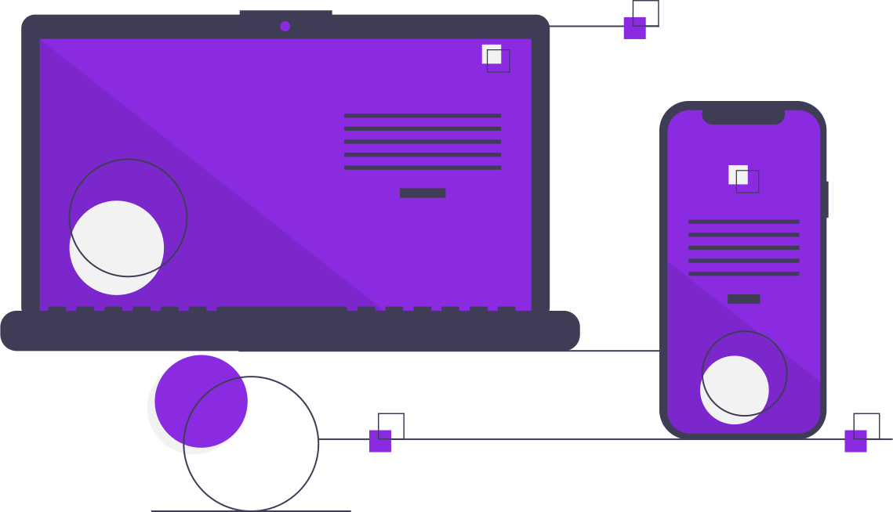

Transformar ideias em sites Web funcionais.
Programador Web Front End com paixão pela criação de experiências de utilizador cativantes ao meu vê criar programas não é so um trabalho, mas também uma arte que tem um valor estético

Programador Web Front End com paixão pela criação de experiências de utilizador cativantes ao meu vê criar programas não é so um trabalho, mas também uma arte que tem um valor estético